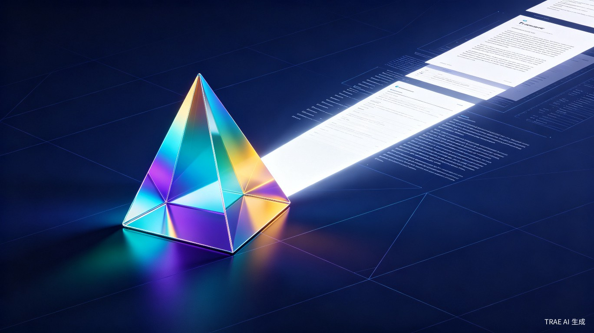
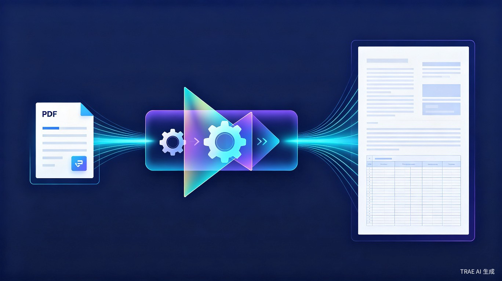
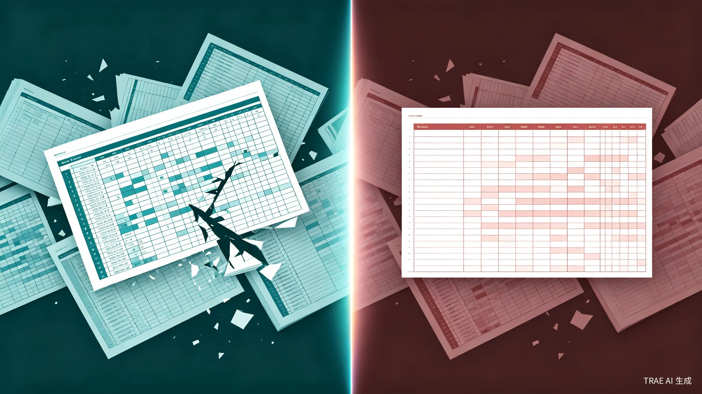
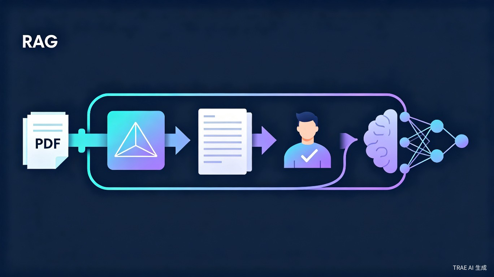
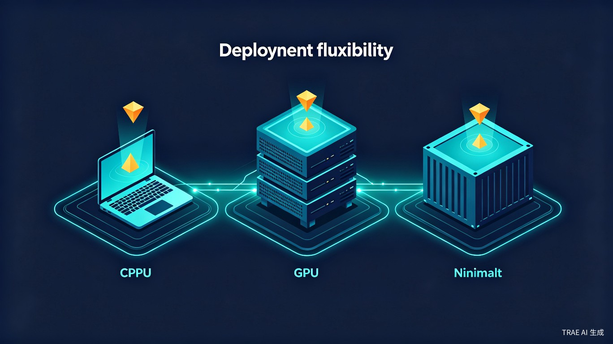

纯本地部署、跨行跨列跨页复杂表格精准识别、人工可调节解析内容、 RAG 友好格式输出 —— 让每一份文档都成为高质量知识源。
在为企业构建 RAG 系统的过程中，我们发现 PDF 解析是整个流程中最薄弱的环节。 现有方案在保密性、精度和可控性上存在系统性缺陷。
主流 PDF 解析服务均为在线 API，文档必须上传至第三方服务器，无法满足金融、医疗、军工等行业的保密合规要求。
跨行、跨列、跨页的复杂表格是现有工具的噩梦。合并单元格错位、表头丢失、数据错行，导致结构化数据提取几乎不可用。
多栏排版、侧边栏、脚注等复杂版面中，解析顺序与人类阅读顺序严重偏离，直接污染 RAG 的上下文质量。
解析结果错误时只能接受或全盘重做，缺乏对解析内容的精细编辑能力。页眉页脚、水印等噪音无法剔除，Garbage in, Garbage out。
效果好的方案需要昂贵 GPU，而大多数企业的生产服务器仅有 CPU 或低配显卡，现有开源方案效果参差不齐。
部分企业需要先翻译再入库 RAG，同时要求人工审核后才能进入知识库，现有工具无法支撑这一完整工作流。
Prism PDF 将 PDF 文档视为需要被精确拆解和重组的光束 —— 通过棱镜般的解析引擎， 将混乱的 PDF 内容折射为结构清晰、RAG 友好的高质量知识片段。

从文档输入到 RAG 就绪输出，Prism PDF 提供端到端的解析、编辑和导出能力。
基于版面分析引擎，精确识别合并单元格、嵌套表格、跨页续表等复杂结构，还原表格的完整语义关系。
通过多栏检测、视觉层级分析和阅读流推断，生成符合人类阅读习惯的内容顺序，而非简单的从左到右、从上到下。
提供可视化编辑界面，支持对解析结果的逐段调整：修改文本、调整顺序、剔除页眉页脚水印、修正表格结构。
集成翻译模块，支持解析后直接翻译为目标语言，翻译结果同样可人工审核和编辑，满足跨国企业的多语言 RAG 需求。
输出 Markdown、JSON、纯文本等 RAG 友好格式，自动分块、标注元数据、保留层级结构，可直接对接向量数据库。
纯 CPU 模式满足基础需求，8GB GPU 即可解锁全部功能并获得 20 倍速度提升。支持 Docker 一键部署。
Prism PDF 在安全性、精度、可控性和资源效率上全面领先。

| 能力维度 | 在线 API 服务 | 开源 OCR 工具 | Prism PDF |
|---|---|---|---|
| 数据本地化 | ✗ 需上传 | ✓ 本地 | ✓ 纯本地 |
| 跨行跨列表格 | ● 部分支持 | ✗ 基本不支持 | ✓ 完整支持 |
| 跨页续表 | ✗ 不支持 | ✗ 不支持 | ✓ 智能拼接 |
| 阅读顺序校正 | ● 基础 | ✗ 无 | ✓ 智能推断 |
| 人工编辑解析结果 | ✗ 不可编辑 | ✗ 需二次开发 | ✓ 可视化编辑 |
| 页眉页脚过滤 | ● 部分 | ✗ 无 | ✓ 自动+手动 |
| 内置翻译 | ● 需额外付费 | ✗ 无 | ✓ 内置集成 |
| RAG 格式输出 | ● 需后处理 | ✗ 需二次开发 | ✓ 原生支持 |
| CPU 运行 | ✓ N/A | ✓ 支持 | ✓ 完整功能 |
| GPU 需求 | ✓ N/A | ● 高配 GPU | ✓ 最低 8GB |
| 处理速度 (GPU) | ✓ 快 | ● 中等 | ✓ 极快 (20x CPU) |
Prism PDF 采用模块化管道架构，每个处理阶段独立可配置，支持灵活组合和扩展。
PDF 渲染、页面分割、方向校正、去水印、去噪点，为后续分析提供干净输入。
基于视觉模型的版面区域检测，识别文本块、表格、图片、标题、列表等区域类型和边界。
专门的表格结构识别引擎，处理合并单元格、嵌套表、跨页续表，输出结构化 HTML/Markdown 表格。
综合版面层级、字体大小、位置关系和视觉流，推断符合人类阅读习惯的内容序列。
优先提取嵌入文本，对扫描件或图片区域启动 OCR，支持中英文及混合排版。
Web 界面提供所见即所得的解析结果编辑器，支持文本修改、顺序调整、表格修正、噪音过滤。
可选翻译模块 + 多格式导出（Markdown / JSON / 纯文本），自动分块并标注元数据。
Prism PDF 定位为企业 RAG 流水线中"PDF 解析 + 人工审核"这一关键环节， 解决从原始文档到高质量知识片段的最后一公里问题。

批量上传 PDF 文档，支持拖拽和 API 调用
自动版面分析、表格识别、阅读顺序校正
可视化编辑器逐段检查和修正解析结果
内置翻译引擎，翻译结果可二次审核
输出 RAG 友好格式，自动分块和元数据标注
直接对接向量数据库，进入检索增强生成流程
Prism PDF 设计了两种运行模式，确保在不同硬件条件下都能高效运行。

纯 CPU 运行全部功能，适合无 GPU 的服务器环境。处理速度适中，功能完整不缩水。
仅需 8GB 显存的入门级 GPU，即可获得约 20 倍的加速效果，大幅提升批量处理吞吐量。
提供 Docker 镜像，一条命令即可启动完整的 Web 服务，支持 CPU / GPU 自动切换。
以下图表展示了 Prism PDF 在关键指标上的表现。
Prism PDF 正在改变企业文档 RAG 化的方式。加入我们，一起构建更智能的文档处理未来。